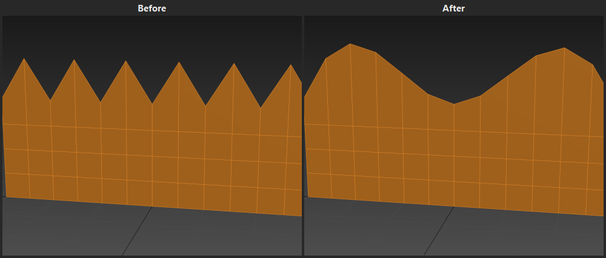
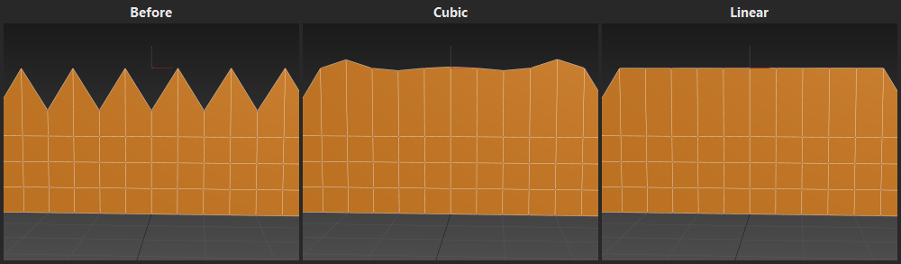
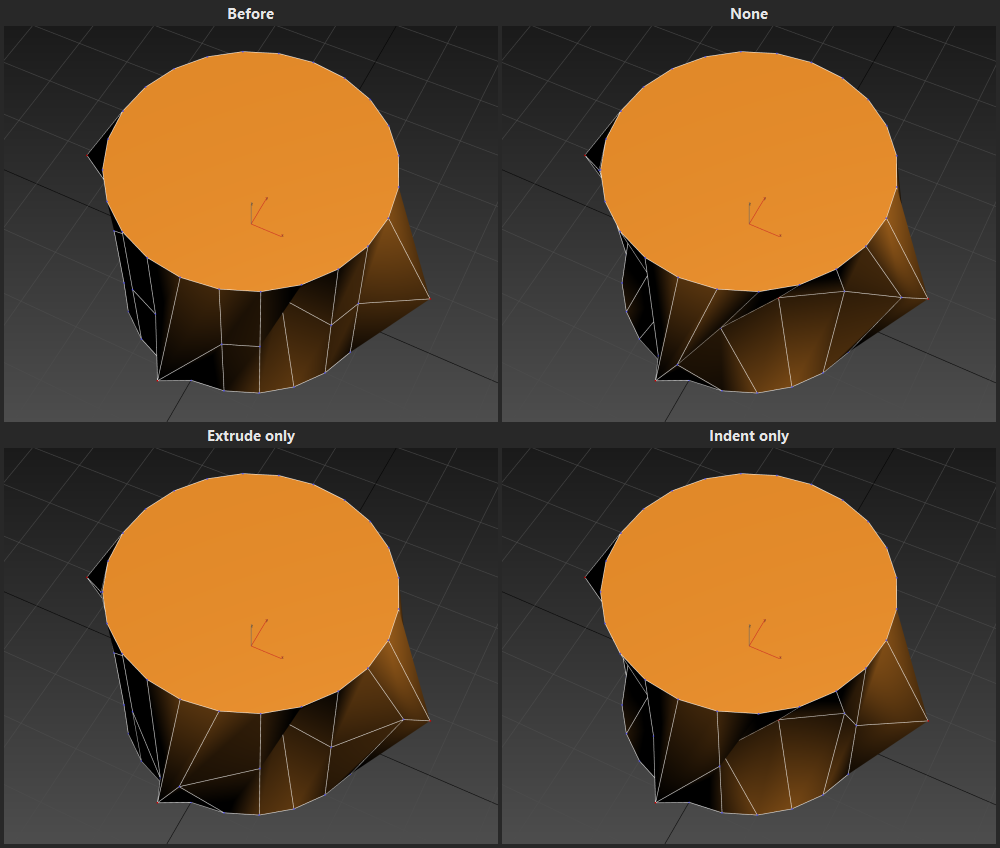
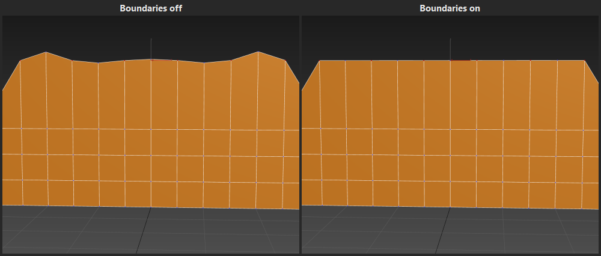

Curve
Turns a loop into a smooth curve.
What it does
Curve bends a loop of vertices into a smooth curve that runs through its end points and is shaped by the vertices in between. It can also be limited to push the loop out or in only.

How to use it
- Open an Editable Poly (or an Edit Poly modifier) in the Modify panel and go to a sub-object level. Select a loop of edges.
- Right-click in the viewport and choose LoopTools9000, then the tool. The submenu is the first item in the lower-left part of the menu, and only shows at sub-object level.
- The tool runs at once with the settings you used last, and a settings box opens in the viewport. Change a setting and the result updates live.
- Press OK to keep it, Cancel to go back to the original shape, or Apply to keep it and run the tool again on top of the result.
Options
| Option | What it does |
|---|---|
| Interpolation | Cubic gives a smooth curve. Linear keeps the vertices on the existing edges. |
| Restriction | None lets the loop move either way. Extrude only only lets it move outward. Indent only only lets it move inward. |
| Boundaries | Also takes the loop's boundaries into account. |
| Regular | Spaces the vertices evenly along the curve (on by default). |
| Lock X / Y / Z | Stops vertices from moving along that axis. |
| Influence | How much of the result is applied, from 0 to 100 %. 100 % is the full effect. |



Good to know
- Keeping the result is one undo step.
- Your settings are remembered for next time.
- It works on Editable Poly and on the Edit Poly modifier.